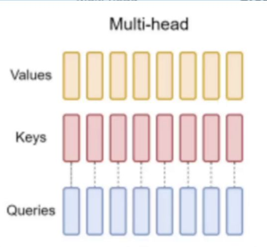
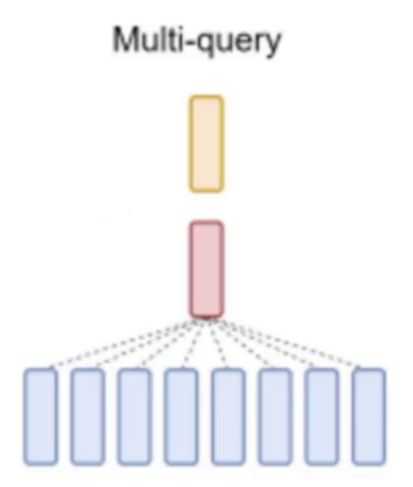

MHA Multi Head Attention，对应的结构图是什么样子？

MQA Multi Query Attention，对应的结构图是什么样子？

GQA Group Query Attention，对应的结构图是什么样子？

在标准的多头注意力中，我们会把输入向量投影成 h 份独立的什么，并行计算每一个头的注意力，然后将各头输出怎样样来形成最终结果。
Q,K,V 矩阵（即有 h 组 Q、K、V），
拼接（或加权结合）起来、
拼接（或加权结合）起来、
MQA：Multi-Query Attention 他的基本思想是什么？
MQA 在多头注意力中只保留“多头的 Query（Q）”，而让所有头共享同一份或少数份 K、V。依然有 hhh 个 Q（多头查询），但 K 和 V 只保留 1 份 或极少份，所有头共同使用。
在Transformer的自注意力结构中，常见的几种变体包括哪3种？ 【对应的中文名称，英文名称和英文简写。】
- MHA（Multi-Head Attention）多头注意力。
- MQA（Multi-Query Attention）多查询注意力。
- GQA（Grouped Query Attention 分组查询注意力。
【面试问题】能介绍下 MQA这种注意力机制 ？
【面试问题】能介绍下 MHA、MQA、GQA 这三种注意力机制的区别和联系吗？
【面试问题】能介绍下 GQA 这种注意力机制 ？
GQA（Grouped Query Attention） 介于两者之间：它把头分成若干组，让每组共用一份 K、V。这比 MHA 节省资源，又比 MQA 灵活一些。这样做能兼顾一定的多样性，同时不会像 MHA 那样开销巨大。
MHA ，
MQA，
GQA，这三者它们的区别是什么？ 【K、V 的共享程度】
GQA：Grouped Query Attention 核心思想是什么？
于 MHA 与 MQA 之间的一种折中方案。在 GQA 中，我们把头分成若干个“组”，让每个组共用一份 K、V；也就是说，多个头会对应同一个 K、V，而这些头在 Q 上仍然独立。

MHA ，
MQA，
GQA，这三者它们的共同点是什么？ 【Q 的角度】
三种方式都保留了多头 Q，只不过MQA/GQA在 K、V 的分组与共享上做了改动。
【面试问题】能介绍下 MHA 这种注意力机制 ？